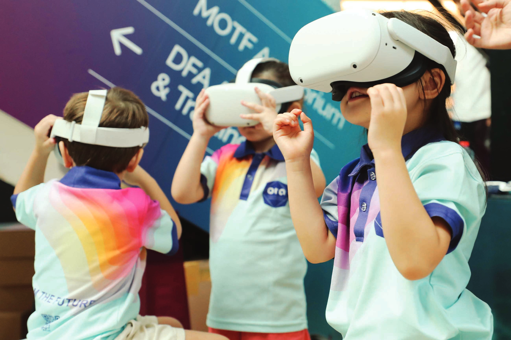

*اصبحت التكنولوجيا ضرورة حتمية فى شتى مجالات الحياة وهو ماجعل التكنولوجيا العصب الاساسى للحياة فى القرن الحادى والعشرين
* تستخدم تقنية الميتافيرس فى المجال التعليمى وتسير بخطى سريعة نظرا للتكنولوجيا الفائقة التى نستخدمها وتجذب بها المتعلمين وتساعد المعلمين فى توفير فرص وامكانات تعلم متميزة
* تتيح تكنولوجيا الميتافيرس امكانية عرض اى مادة تعلمية بطريقة شائقة وجذابة للطلاب بما ينمى قدراتهم العقلية
* تساهم تكنولوجيا الميتافيرس فى مجال التعليم فى زيادة دافعية الطلاب وجذبهم للمادة العلمية من خلال الواقع المعزز الذى يستخدمه المعلم مع طلابه مما يساهم فى جذبهم للمادة التعليمية
|  |
* وقد استخدم الميتافيرس فى قطاع التعليم فى ظل الظروف الطارئة كجائحة كورونا
* ودعم التعليم عن بعد مما جعل الميتافيرس يدخل فى قطاع التعليم
.gif)
بالاضافة الى تقنيات الذكاء الاصطناعى يتم التفاعل معها فى الوقت الحقيقى وبشكل فعال ومستمر ويشترك فيها عدد غير محدود من الاشخاص حول العالم
1. توفير الخبرات الغير مباشرة
2. توفير التعليم فى المناطق النائية
3. يخلق جوا من المتعة والاثارة والتشويق للمتعلم
4. يعتبر عنصرا جاذبا فى مجال التعليم
5. يحول الخبرات المجردة الى خبرات محسوسة يسهل تعلمها


• يقول الخبراء إن روبوتات الدردشة التي تعمل بالذكاء الاصطناعي يغير طريقة تعليم الطلاب ودراستهم.
• ففي السنوات الأخيرة، عمل الذكاء الاصطناعي (AI) على تغيير العالم بطرق عميقة ولكن ربما يكون أحد أكثر التطبيقات الواعدة للذكاء الاصطناعي هو مجال التعليم، حيث لديه القدرة على إحداث ثورة في طريقة التدريس والتعلم.
• أحد التطورات المثيرة بشكل خاص في هذا المجال هو ChatGPT والذي يوفر تجارب تعليمية أكثر تخصيصًا للطلاب.
• بفضل إمكانات معالجة اللغة الطبيعية المتقدمة، يمكن لـ ChatGPT تحليل الأداء السابق للطالب وتحديد المجالات التي قد يعانون فيها.
• كما يمكن أن يساعد ذلك المعلمين على توفير الدعم والموارد الموجهة لمساعدة الطلاب على التحسين في المناطق التي هم في أمس الحاجة إليها بشكل عام يمكن استخدام ChatGPT فى تحسين عملية التعلم
آثار اقتراح استخدام الذكاء الاصطناعى Chat GPT لمساعدة الطلاب على تطوير مهاراتهم فى الكتابة فى مدارس بنما، جدلا واسعا فى البلاد، وفقا لصحيفة "خورنادا" المكسيكية.
وأشارت الصحيفة إلى أن Chat GPT اثار انقساما حول استخدامه فى المدارس فى بنما ، حيث يرى البعض أنه يمكن للطلاب الاستفادة منه فى الفصول وهناك من يرى العكس وهو أنه سيبطئ القدرة التنموية للطلاب ، وأصبح منصة الذكاء الاصطناعى محط انظار ودهشة للكثيرين فى الوقت الذى يرغب فى إيقافه.
وأوضحت الصحيفة، أن Chat GPT كنموذج لغوي ، يمكن أن يكون أداة مفيدة لمساعدة الطلاب على تحسين مهارات الاتصال والكتابة باللغة الإسبانية. ومع ذلك ، هناك العديد من العوامل التي يجب مراعاتها قبل اتخاذ قرار بشأن تعليم الطلاب استخدام Chat GPT في المدارس والكليات في بنما، وفقا للخبراء.
وأشار الخبراء إلى أنه فى المقام الاول يجب تذكر أن Chat GPT هو نموذج لغة آلي مصمم لإنتاج نص بناءً على أنماط في بيانات التدريب. على الرغم من أنه يمكنك إنشاء ردود مفيدة ومتسقة ، فقد تظل لديك قيود وأخطاء في فهمك واستجابتك.
وفى المقام الثانى، فى حين أن استخدام Chat GPT قد يكون مفيدًا في مساعدة الطلاب على تحسين كتاباتهم وتواصلهم ، فمن المهم أيضًا للطلاب تطوير مهارات الكتابة والتواصل المستقلة والأصيلة. يمكن أن يؤدي الاستخدام المفرط للأدوات الآلية إلى اعتماد الطلاب بشكل مفرط عليها وفشلهم في تطوير مهارات التفكير النقدي وحل المشكلات.
ولخص الخبراء أن يكون استخدام Chat GPT مفيدًا كأداة تكميلية لمساعدة الطلاب على تحسين مهارات الاتصال والكتابة باللغة الإسبانية، ولكن من المهم التأكد من أن الطلاب يطورون أيضًا مهارات أصيلة وحاسمة. يجب اتخاذ قرار تعليم الطلاب استخدام Chat GPT بعناية وبفهم واضح لفوائدها وقيودها.
على سبيل المثال، يمكننا تزويد الطلاب بإرشادات واضحة حول كيفية استخدام Chat GPT كأداة دعم لعملهم المدرسي. يمكننا تعليمهم كيفية استخدامه بشكل استراتيجي لتحسين كتابتهم وتواصلهم ، مع ضمان أن تكون الأفكار والمعلومات التي يقدمونها أصلية.